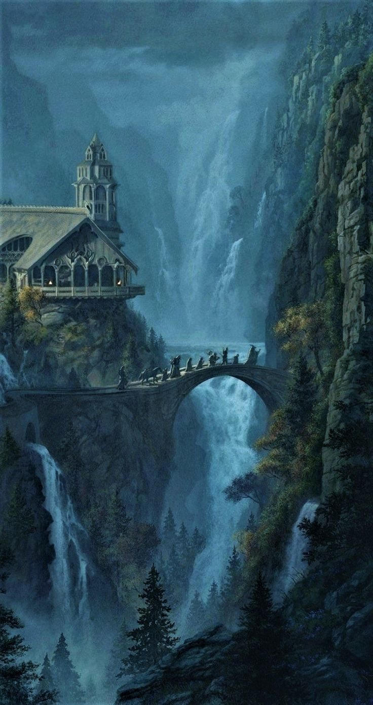
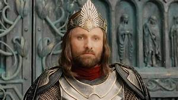
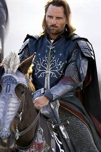
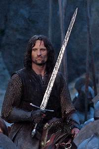
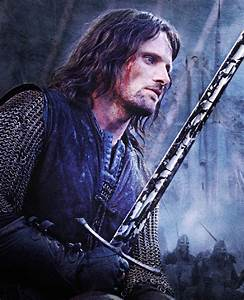
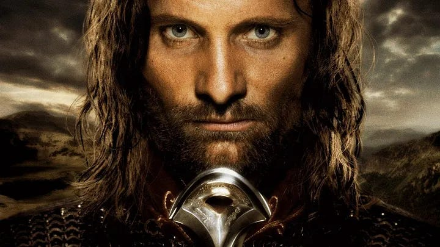

Valfenda
O menino chamado Esperança
Após a morte de Arathorn, Gilraen levou o filho a Valfenda. Ali recebeu o nome Estel, “Esperança”, e cresceu sem saber que era herdeiro dos reis do Norte.

Herança dos Dúnedain · Terceira Era
Do Passolargo ao Rei Elessar
Muito antes da coroa, ele percorreu as terras ermas como um guardião sem reino. Quando a sombra avançou, escolheu caminhar ao lado dos povos livres.
Três nomes para uma vida atravessada por esperança, exílio e dever. Aragorn II, filho de Arathorn II e Gilraen, cresceu em Valfenda sob os cuidados de Elrond. Sua origem foi mantida em segredo até que estivesse pronto para conhecer a própria linhagem.
Caminhos de um rei
Seu destino não começou no trono. Foi construído por décadas de serviço, escolhas difíceis e lealdade.
Valfenda
Após a morte de Arathorn, Gilraen levou o filho a Valfenda. Ali recebeu o nome Estel, “Esperança”, e cresceu sem saber que era herdeiro dos reis do Norte.

Terras ermas
Entre os Guardiões do Norte, Aragorn protegeu povos que quase nunca conheceram seu nome. Para os hobbits de Bri, era apenas o misterioso Passolargo.

A Sociedade do Anel
Guiou Frodo e seus companheiros depois de Bri e tornou-se um dos membros da Sociedade. Após a queda de Gandalf em Moria, coube a ele conduzir o grupo.

A Guerra do Anel
Com Andúril reforjada, percorreu os Caminhos dos Mortos, tomou o controle dos navios de Umbar e chegou à batalha dos Campos do Pelennor. Depois marchou ao Portão Negro para dar a Frodo uma última chance.

Minas Tirith
Com a derrota de Sauron, Aragorn foi coroado como Elessar. Reuniu os reinos de Gondor e Arnor e iniciou uma era de reconstrução.

Uma história anterior a ele
A ascendência de Aragorn liga as grandes histórias da Primeira Era aos reinos dos homens. Beren e Lúthien estão entre seus antepassados; por meio de Elros, a linhagem segue até Númenor. Elendil e seu filho Isildur fundaram os Reinos no Exílio.
Depois da queda de Arnor, seus descendentes continuaram como chefes dos Dúnedain. Aragorn herdou essa reivindicação e a transformou em responsabilidade vivida.
Retratos de uma trajetória
Do viajante das estradas ao rei de Gondor.

Além da coroa
Seu reencontro, a promessa feita em Cerin Amroth e a escolha de Arwen pela mortalidade acrescentam uma dimensão íntima à história do rei. O destino dos dois também ecoa a antiga união de Beren e Lúthien.
Conhecer essa históriaA jornada continua